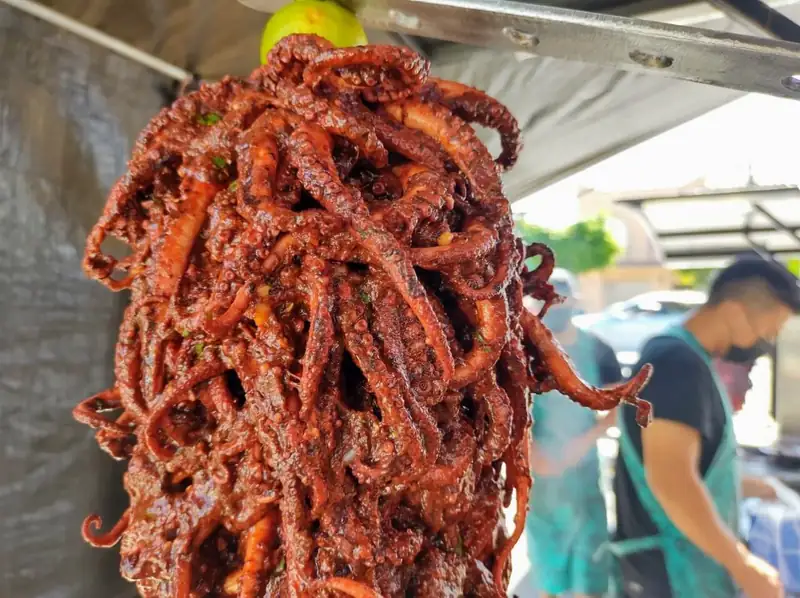
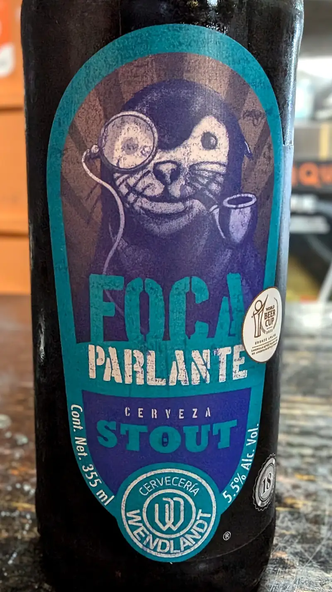
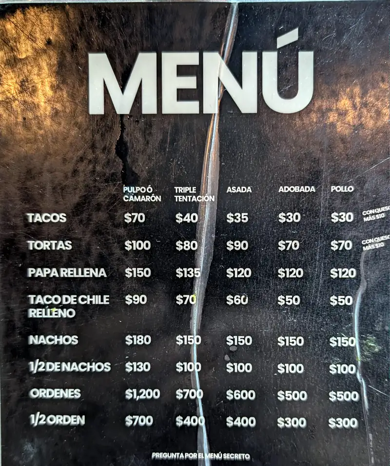
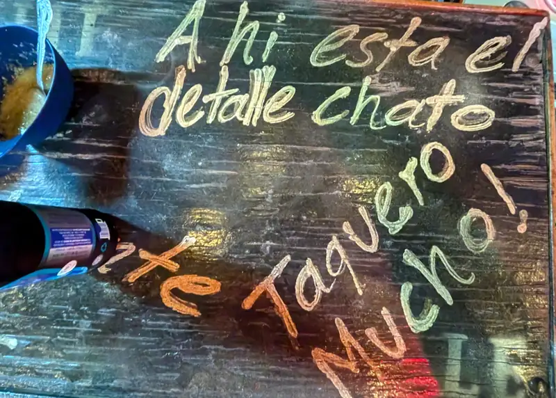
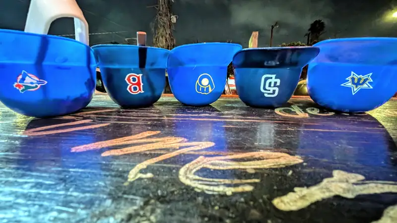
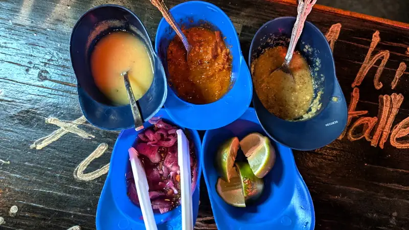
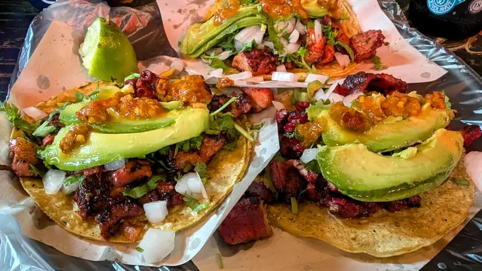
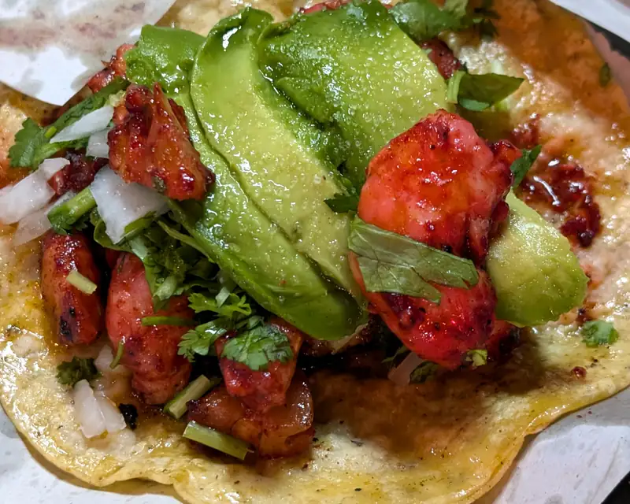
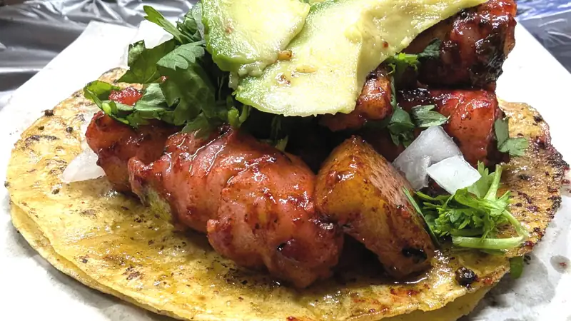

Restaurantes - Le Taquié
Otro de tantos "por fin probamos" de estas vacaciones... estos tacos que se hicieron 2-3 virales por una foto de su trompo de pulpo adobado:

{kind=link}
Le Taquié. al parecer se han cambiado varias veces de lugar, pero por el momento están en la villa Mexicana al lado de.. eer.. no sé.. fue el primer local caminando de la 2a a la 1ra sobre la Riveroll.
No se si sea porque están en la Villa Mexicana, o porqué, pero ps como también era viernes en la tarde/noche, ps pedimos una cheve. Artesanal/local, obviamente :P ... una foca parlante de @wendlandt - stout en botella personalmente como que no... pero pues.. estás en la taquería, no te vas a poner de mamón a pedir vaso con tu cheve -- AUNQUESEA la taquería donde hacen tacos de mariscos y tenga nombre "francés"!
 {kind=link}
Le Menú 🙃
 {kind=link}
Les phrases motivacionales 🙃
 {kind=link}
Al parecer los dueños son fans del beis?
 {kind=link}
Les sauces 🙃
 {kind=link}
Va pues, el primer plato, con 2 de pulpo y 1 de puerco (adoba'o todo, pues)
 {kind=link}
De pulpo, closeup ... debo admitir que sí, están buenos los de pulpo, pero tal vez por no ser directamente del trompo, como que le falta algo... tal vez un poco de sal? o una reposada en salmuera antes de cocerlo? --- 'saaabe, pero también puede ser que haya sido una alta expectativa por algo que se volvió viral. Y sí, alguien me dijo que no eran para tanto, pero pues... tenemos que probar para saber sis'cierto.
 {kind=link}
Y... closeup de uno de camarón.
 {kind=link}